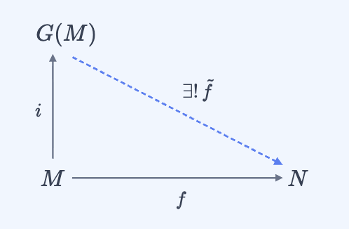

Grothendieck 群函子
设 $M$ 为交换幺半群, 在 $M\times M$ 上定义等价关系: $$(a,b)\sim(c,d)\quad\Longleftrightarrow\quad\exists\ k\in M\ :\ a+d+k = b+c+k$$ 记 Grothendieck 群 $G(M):=(M\times M)/{\sim}$ , 配备有
- 加法 : $[(a,b)]+[(c,d)]=[(a+c,b+d)]$
- 加法幺元 : $[(0,0)]$
- 加法逆元 : $-[(a,b)]=[(b,a)]$
(1) 群结构 : $G(M)$ 构成交换群
(2) 泛性质 : 对任意交换群 $N$ 及幺半群同态 $f:M\to N$ , 存在唯一群同态 $\tilde{f}:G(M)\to N$ 使得 $\tilde{f}\circ i = f$ 成立
换言之, Grothendieck 群函子 $G:\mathsf{CMon}\to\mathsf{Ab}$ 是遗忘函子 $U:\mathsf{Ab}\to\mathsf{CMon}$ 的左伴随函子
证明
引理 I $x + (-x) = 0$ 对所有 $x\in G(M)$ 成立
商归纳
不妨令 $x=[(a,b)]$
计算
$[(a,b)] + (-[(a,b)])$
$=$
$[(a,b)] + [(b,a)]$
$=$
$[(a+b,b+a)]$
$=$
$0$
引理 II $-x + x = 0$ 对所有 $x\in G(M)$ 成立
商归纳
不妨令 $x=[(a,b)]$
计算
$-[(a,b)] + [(a,b)]$
$=$
$[(b,a)] + [(a,b)]$
$=$
$[(b+a,a+b)]$
$=$
$0$
目标拆解
代数结构 $G(M)$ 构成加法交换群
资料
加法 为 $(\cdot +\cdot)$
加法幺元 为 $0$
加法逆 为 $(-\cdot)$
加法幺元 为 $0$
加法逆 为 $(-\cdot)$
目标拆解
加法结合律 $x+y+z = x+(y+z)$ 对一切 $x,y,z\in G(M)$ 成立
商归纳
不妨令 $x=[(a_1,a_2)]\ ,\ y=[(b_1,b_2)]\ ,\ z=[(c_1,c_2)]$
计算
$(x+y)+z$
$=$
$[(a_1+b_1,\;a_2+b_2)] + [(c_1,c_2)]$
$=$
$[((a_1+b_1)+c_1,\;(a_2+b_2)+c_2)]$
$=$
$[(a_1+(b_1+c_1),\;a_2+(b_2+c_2))]$
$=$
$x+(y+z)$
加法左幺元 $0 + x = x$ 对一切 $x \in G(M)$ 成立
商归纳
不妨令 $x=[(a,b)]$
计算
$0 + [(a,b)]$
$=$
$[(0+a,\;0+b)]$
$=$
$[(a,b)]$
加法右幺元 $x + 0 = x$ 对一切 $x \in G(M)$ 成立
商归纳
不妨令 $x=[(a,b)]$
计算
$[(a,b)] + 0$
$=$
$[(a+0,\;b+0)]$
$=$
$[(a,b)]$
加法交换律 $x + y = y + x$ 对一切 $x,y \in G(M)$ 成立
商归纳
不妨令 $x=[(a_1,a_2)]\ ,\ y=[(b_1,b_2)]$
计算
$[(a_1,a_2)] + [(b_1,b_2)]$
$=$
$[(a_1+b_1,\;a_2+b_2)]$
$=$
$[(b_1+a_1,\;b_2+a_2)]$
$=$
$[(b_1,b_2)] + [(a_1,a_2)]$
加法逆元 $-x + x = 0$ 对一切 $x \in G(M)$ 成立
应用结论
由引理 II即可给出证明
泛性质 存在唯一的 $\tilde{f}$ 使得 $\tilde{f}\circ i = f$
交换图

注意到 $ f(0) = 0$
计算
$f(0)$
$=$
$(f(0)+f(0))-f(0)$
$=$
$f(0)-f(0)$
$=$
$0$
卖弄 $ f(n\cdot a) = n\cdot f(a) $对一切 $a \in M$ 和 $n \in \mathbb{N}$ 成立
数学归纳法
归纳对象
对自然数 $n$ 使用数学归纳法
基础情形 $n=0$
计算
$f(0\cdot a)$
$=$
$f(0)$
$=$
$0$
$=$
$0\cdot f(a)$
$\to\,$ 完成
归纳步骤 $n = k + 1$
计算
$f((k+1)\cdot a)$
$=$
$f(k\cdot a + a)$
$=$
$f(k\cdot a) + f(a)$
$=$
$k\cdot f(a) + f(a)$
$=$
$k\cdot f(a) + 1\cdot f(a)$
$=$
$(k+1)\cdot f(a)$
$\to\,$ 完成
存在性 存在 $\tilde{f} : G(M) \to N$ 使得 $\tilde{f}$ 是群同态并且 $\tilde{f}\circ i = f$
定义
令 $\tilde{f}_{\text{raw}} : (M \times M) \to N$ 为 $\tilde{f}_{\text{raw}}(p) := f(p_1) - f(p_2)$
良定义性 若 $p \sim q$ , 则 $\tilde{f}_{\text{raw}}(p) = \tilde{f}_{\text{raw}}(q)$
前提
由 $p \sim q$ , 存在 $k \in M$ 使得 $$p_1 + q_2 + k = p_2 + q_1 + k$$
推导
等式两边同时作用 $f$ , 并由 $f$ 保持加法的性质展开, 得$$f(p_1) + f(q_2) + f(k) = f(p_2) + f(q_1) + f(k)$$
消去律
在目标交换群 $N$ 中消去右侧的 $f(k)$ , 得到$$f(p_1) + f(q_2) = f(p_2) + f(q_1)$$
引理 $f(p_1) - f(p_2) = f(q_1) - f(q_2)$
证明
我们考察两式之差：
计算
$(f(p_1) - f(p_2)) - (f(q_1) - f(q_2))$
$=$
$(f(p_1) + f(q_2)) - (f(p_2) + f(q_1))$
$=$
$0$
结论
稍作变形即得该结论
计算
$\tilde{f}_{\text{raw}}(p)$
$=$
$f(p_1) - f(p_2)$
$=$
$f(q_1) - f(q_2)$
$=$
$\tilde{f}_{\text{raw}}(q)$
定义
令 $\tilde{f}_{\text{raw}}(a,b) := f(a)-f(b)$ 为候选函数在代表元上的行为
良定义性 $\tilde{f}_{\text{raw}}$ 在 $\sim$ 下是良定义的
策略
若 $(p_1,p_2)\sim(q_1,q_2)$ , 则存在 $k$ 使 $$p_1+q_2+k = p_2+q_1+k$$将等式两边作用 $f$ 后在交换群 $N$ 中消去 $f(k)$ 即得两边相等
提取
从等价关系中提取见证元 $k$ 及等式
推导
对提取出的等式两边应用 $f$（利用 $f$ 保持加法）得到 $N$ 中的等式
计算
$\tilde{f}_{\text{raw}}(p)$
$=$
$f(p_1)-f(p_2)$
$=$
$(f(p_1)-f(p_2)) + 0$
$=$
$(f(p_1)-f(p_2)) + \big((f(p_1)+f(q_2)+f(k)) - (f(p_2)+f(q_1)+f(k))\big)$
$=$
$f(q_1)-f(q_2)$
$=$
$\tilde{f}_{\text{raw}}(q)$
构造
由良定义性, 通过商映射提升得到 $\tilde{f}:G(M)\to N$
态射 $\tilde{f}$ 是群同态
商归纳
用商空间双重归纳回到代表元 $(a,b),(c,d)$ 上验证加法保持
计算
$\tilde{f}([(a,b)]+[(c,d)])$
$=$
$\tilde{f}([(a+c,\;b+d)])$
$=$
$f(a+c)-f(b+d)$
$=$
$(f(a)+f(c))-(f(b)+f(d))$
$=$
$(f(a)-f(b))+(f(c)-f(d))$
$=$
$\tilde{f}([(a,b)]) + \tilde{f}([(c,d)])$
典范性 $\tilde{f} \circ i = f$
外延性
任取 $a \in M$ , 逐点验证函数相等
计算
$\tilde{f}(i(a))$
$=$
$\tilde{f}([(a,0)])$
$=$
$f(a)-f(0)$
$=$
$f(a)-0$
$=$
$f(a)$
注意到 $\tilde{f}(0)=0$
计算
$\tilde{f}(0)$
$=$
$\tilde{f}(i(0))$
$=$
$f(0)$
$=$
$0$
我们有 $\tilde{f}(-x) = -\tilde{f}(x)$
外延性
任取 $x \in G(M)$ , 逐点验证函数相等
我们有 $\tilde{f}(x) + \tilde{f}(-x) = 0$
计算
$\tilde{f}(x) + \tilde{f}(-x)$
$=$
$\tilde{f}(x + (-x))$
$=$
$\tilde{f}(0)$
$=$
$0$
计算
$\tilde{f}(-x)$
$=$
$0 + \tilde{f}(-x)$
$=$
$(-\tilde{f}(x) + \tilde{f}(x)) + \tilde{f}(-x)$
$=$
$-\tilde{f}(x) + (\tilde{f}(x) + \tilde{f}(-x))$
$=$
$-\tilde{f}(x) + 0$
$=$
$-\tilde{f}(x)$
唯一性 不存在两个不同的 $\tilde{f}$ 同时满足上述条件
反证法
假设
设 $g: G(M) \to N$ 满足群同态条件且 $g \circ i = f$ , 但 $g \neq \tilde{f}$
我们有 $g(x) \neq \tilde{f}(x)$ 对某个 $x\in G(M)$ 成立
反证法
假设
假设对所有 $x\in G(M)$ 均有 $g(x)=\tilde{f}(x)$
推导
由函数外延性得 $g=\tilde{f}$
矛盾
与 $g\neq\tilde{f}$ 矛盾, 故反证假设不成立
$\to\,$ 矛盾
代入
取这样的 $x$ , 以下记 $h_{\text{diff}}: g(x) \neq \tilde{f}(x)$
我们有 $x$ 可写为 $i(a) + (-i(b))$ 的形式
提取代表元
由商空间定义, 存在 $(a,b)\in M\times M$ 使得 $x = [(a,b)]$
重写
$[(a,b)] = [(a+0,0+b)] = i(a) + (-i(b))$
代入
将 $x$ 替换为 $i(a) + (-i(b))$ , 此后目标中 $x$ 均以此形式出现
我们有 $g(-y) = -g(y)$ 对一切 $y \in G(M)$ 成立
注意到 $g(y) + g(-y) = 0$
计算
$g(y) + g(-y)$
$=$
$g(y + (-y))$
$=$
$g(0)$
$=$
$g(i(0))$
$=$
$f(0)$
$=$
$0$
计算
$g(-y)$
$=$
$0 + g(-y)$
$=$
$(-g(y) + g(y)) + g(-y)$
$=$
$-g(y) + (g(y) + g(-y))$
$=$
$-g(y) + 0$
$=$
$-g(y)$
目标转移
待证目标可转化为 $g(i(a) + (-i(b))) = \tilde{f}(i(a) + (-i(b)))$
计算
$g(i(a) + (-i(b)))$
$=$
$g(i(a)) + g(-i(b))$
$=$
$g(i(a)) + (-g(i(b)))$
$=$
$f(a) + (-f(b))$
$=$
$\tilde{f}(i(a)) + (-\tilde{f}(i(b)))$
$=$
$\tilde{f}(i(a)) + \tilde{f}(-i(b))$
$=$
$\tilde{f}(i(a) + (-i(b)))$
$\to\,$ 矛盾
□
Grothendieck.lean
257 lines
import Mathlib.Algebra.Group.Basic
import Mathlib.Data.Quot
import Mathlib.Tactic
macro_rules | `(tactic| trivial) => `(tactic| intros; rfl)
namespace Grothendieck
variable (M : Type*) [AddCommMonoid M]
def GrRel : (M × M) → (M × M) → Prop :=
λ p q => ∃ k : M, p.1 + q.2 + k = p.2 + q.1 + k
def Gr : Type _ := Quot (GrRel M)
namespace Gr
variable {M}
def mk (a b : M) : Gr M := Quot.mk (GrRel M) (a, b)
lemma add_respects (p q p' q' : M × M) (hp : GrRel M p p') (hq : GrRel M q q') :
GrRel M (p.1 + q.1, p.2 + q.2) (p'.1 + q'.1, p'.2 + q'.2) := by
rcases hp with ⟨kp, hp⟩
rcases hq with ⟨kq, hq⟩
use kp + kq
calc
(p.1 + q.1) + (p'.2 + q'.2) + (kp + kq) = (p.1 + p'.2 + kp) + (q.1 + q'.2 + kq) := by abel_nf
_ = (p.2 + p'.1 + kp) + (q.1 + q'.2 + kq) := by rw [hp]
_ = (p.2 + p'.1 + kp) + (q.2 + q'.1 + kq) := by rw [hq]
_ = (p.2 + q.2) + (p'.1 + q'.1) + (kp + kq) := by abel_nf
lemma neg_respects (p q : M × M) (h : GrRel M p q) : GrRel M (p.2, p.1) (q.2, q.1) := by
rcases h with ⟨k, h⟩
use k
exact h.symm
instance : Add (Gr M) where
add := (Quot.liftOn₂ · ·
(fun p q =>
Gr.mk (p.1 + q.1) (p.2 + q.2))
(fun a b₁ b₂ hb =>
Quot.sound (add_respects a b₁ a b₂ (by use 0; abel) hb))
(fun a₁ a₂ b ha =>
Quot.sound (add_respects a₁ b a₂ b ha (by use 0; abel))))
instance : Zero (Gr M) where
zero := Gr.mk 0 0
instance : Neg (Gr M) where
neg x := Quot.liftOn x (λ p => Gr.mk p.2 p.1) (λ p q h => Quot.sound (neg_respects p q h))
def i : M → Gr M := λ a => Gr.mk a 0
end Gr
end Grothendieck
open Grothendieck
structure GrothendieckResult (M : Type*) [AddCommMonoid M] where
group : AddCommGroup (Gr M)
universal : ∀ {N : Type*} [AddCommGroup N] (f : M → N)
(_ : ∀ a b, f (a + b) = f a + f b),
∃! g : Gr M → N, (∀ x y, g (x + y) = g x + g y) ∧ (∀ a, g (Gr.i a) = f a)
def main_theorem {M : Type*} [AddCommMonoid M] : GrothendieckResult M := by
have gr_add_right_neg : ∀ x : Gr M, x + (-x) = 0 := by
intro x
induction x using Quot.inductionOn
rename_i p
rcases p with ⟨a, b⟩
change Quot.mk _ (a + b, b + a) = Quot.mk _ (0, 0)
apply Quot.sound
unfold GrRel
use 0
abel_nf
have gr_neg_add_cancel : ∀ x : Gr M, -x + x = 0 := by
intro x
induction x using Quot.inductionOn
rename_i p
rcases p with ⟨a, b⟩
change Quot.mk _ (b + a, a + b) = Quot.mk _ (0, 0)
apply Quot.sound
unfold GrRel
use 0
abel_nf
constructor
· refine {
add := (· + ·)
nsmul := nsmulRec
neg := (-·)
sub := fun x y => x + (-y)
zero := 0
add_assoc := ?_
zero_add := ?_
add_zero := ?_
nsmul_zero := ?_
nsmul_succ := ?_
sub_eq_add_neg := ?_
zsmul := zsmulRec
zsmul_zero' := ?_
zsmul_succ' := ?_
zsmul_neg' := ?_
add_comm := ?_
neg_add_cancel := gr_neg_add_cancel
}
· intro x y z
induction x using Quot.inductionOn; rename_i p; rcases p with ⟨a1, a2⟩
induction y using Quot.inductionOn; rename_i q; rcases q with ⟨b1, b2⟩
induction z using Quot.inductionOn; rename_i r; rcases r with ⟨c1, c2⟩
show (Gr.mk a1 a2 + Gr.mk b1 b2) + Gr.mk c1 c2 = Gr.mk a1 a2 + (Gr.mk b1 b2 + Gr.mk c1 c2)
calc
(Gr.mk a1 a2 + Gr.mk b1 b2) + Gr.mk c1 c2 = Gr.mk (a1 + b1) (a2 + b2) + Gr.mk c1 c2 := rfl
_ = Gr.mk ((a1 + b1) + c1) ((a2 + b2) + c2) := rfl
_ = Gr.mk (a1 + (b1 + c1)) (a2 + (b2 + c2)) := by rw [add_assoc, add_assoc]
_ = Gr.mk a1 a2 + Gr.mk (b1 + c1) (b2 + c2) := rfl
_ = Gr.mk a1 a2 + (Gr.mk b1 b2 + Gr.mk c1 c2) := rfl
· intro x
induction x using Quot.inductionOn; rename_i p; rcases p with ⟨a, b⟩
show 0 + Gr.mk a b = Gr.mk a b
calc
0 + Gr.mk a b = Gr.mk 0 0 + Gr.mk a b := rfl
_ = Gr.mk (0 + a) (0 + b) := rfl
_ = Gr.mk a b := by rw [zero_add, zero_add]
· intro x
induction x using Quot.inductionOn; rename_i p; rcases p with ⟨a, b⟩
show Gr.mk a b + 0 = Gr.mk a b
calc
Gr.mk a b + 0 = Gr.mk a b + Gr.mk 0 0 := rfl
_ = Gr.mk (a + 0) (b + 0) := rfl
_ = Gr.mk a b := by rw [add_zero, add_zero]
· trivial
· trivial
· trivial
· trivial
· trivial
· trivial
· intro x y
induction x using Quot.inductionOn; rename_i p; rcases p with ⟨a1, a2⟩
induction y using Quot.inductionOn; rename_i q; rcases q with ⟨b1, b2⟩
show Gr.mk a1 a2 + Gr.mk b1 b2 = Gr.mk b1 b2 + Gr.mk a1 a2
calc
Gr.mk a1 a2 + Gr.mk b1 b2 = Gr.mk (a1 + b1) (a2 + b2) := rfl
_ = Gr.mk (b1 + a1) (b2 + a2) := by rw [add_comm a1, add_comm a2]
_ = Gr.mk b1 b2 + Gr.mk a1 a2 := rfl
· intro N _ f hf_add
have hf_zero : f 0 = 0 := by
have h := hf_add 0 0
rw [add_zero] at h
calc
f 0 = (f 0 + f 0) - f 0 := by abel
_ = f 0 - f 0 := by rw [← h]
_ = 0 := by simp
have h_f_nsmul : ∀ (a : M) (n : ℕ), f (n • a) = n • f a := by
intro a n
induction n with
| zero =>
calc
f (0 • a) = f 0 := by rw [zero_smul]
_ = 0 := hf_zero
_ = 0 • f a := by rw [zero_smul]
| succ k ih =>
calc
f ((k + 1) • a) = f (k • a + a) := by rw [add_smul, one_smul]
_ = f (k • a) + f a := hf_add _ _
_ = k • f a + f a := by rw [ih]
_ = k • f a + 1 • f a := by rw [one_smul]
_ = (k + 1) • f a := by rw [← add_smul]
let ftilde_raw : (M × M) → N := fun p => f p.1 - f p.2
have h_respects : ∀ (p q : M × M), Grothendieck.GrRel M p q → ftilde_raw p = ftilde_raw q := by
intro p q h_rel
rcases h_rel with ⟨k, h_eq⟩
have h_f_eq : f p.1 + f q.2 + f k = f p.2 + f q.1 + f k := by
have := congrArg f h_eq
simpa [add_assoc, hf_add] using this
have h_cancel : f p.1 + f q.2 = f p.2 + f q.1 := add_right_cancel (by simpa [add_assoc] using h_f_eq)
have h_result : f p.1 - f p.2 = f q.1 - f q.2 := by
apply sub_eq_zero.mp
calc
(f p.1 - f p.2) - (f q.1 - f q.2) = (f p.1 + f q.2) - (f p.2 + f q.1) := by abel
_ = 0 := by rw [h_cancel, sub_self]
calc
ftilde_raw p = f p.1 - f p.2 := rfl
_ = f q.1 - f q.2 := h_result
_ = ftilde_raw q := rfl
let ftilde : Gr M → N := Quot.lift ftilde_raw h_respects
have h_ftilde_add : ∀ x y, ftilde (x + y) = ftilde x + ftilde y := by
intro x y; refine Quot.induction_on₂ x y ?_; intro ⟨a, b⟩ ⟨c, d⟩
show ftilde (Gr.mk (a + c) (b + d)) = ftilde (Gr.mk a b) + ftilde (Gr.mk c d)
calc
ftilde (Gr.mk (a + c) (b + d)) = f (a + c) - f (b + d) := rfl
_ = (f a + f c) - (f b + f d) := by rw [hf_add a c, hf_add b d]
_ = (f a - f b) + (f c - f d) := by abel
_ = ftilde (Gr.mk a b) + ftilde (Gr.mk c d) := rfl
have h_ftilde_comm : ∀ a, ftilde (Gr.i a) = f a := by
intro a
calc
ftilde (Gr.i a) = ftilde (Gr.mk a 0) := rfl
_ = f a - f 0 := rfl
_ = f a - 0 := by rw [hf_zero]
_ = f a := by simp
have h_ftilde_zero : ftilde 0 = 0 := by
calc
ftilde 0 = ftilde (Gr.i 0) := rfl
_ = f 0 := h_ftilde_comm 0
_ = 0 := hf_zero
have h_ftilde_neg : ∀ x, ftilde (-x) = -(ftilde x) := by
intro x
have h_sum : ftilde x + ftilde (-x) = 0 := by
calc
ftilde x + ftilde (-x) = ftilde (x + (-x)) := by rw [← h_ftilde_add]
_ = ftilde 0 := by rw [gr_add_right_neg]
_ = 0 := h_ftilde_zero
calc
ftilde (-x) = 0 + ftilde (-x) := by simp only [zero_add]
_ = (-(ftilde x) + ftilde x) + ftilde (-x) := by simp
_ = -(ftilde x) + (ftilde x + ftilde (-x)) := by abel
_ = -(ftilde x) + 0 := by rw [h_sum]
_ = -(ftilde x) := by simp
refine ⟨ftilde, ?_existence, ?_uniqueness⟩
case _existence =>
exact ⟨h_ftilde_add, h_ftilde_comm⟩
case _uniqueness =>
intro g ⟨h_hom_g, h_comm_g⟩
by_contra h_ne
have h_exists_diff : ∃ x : Gr M, g x ≠ ftilde x := by
by_contra h_no_ex
push Not at h_no_ex
apply h_ne; ext x
exact h_no_ex x
rcases h_exists_diff with ⟨x, h_diff⟩
have hx : ∃ (a b : M), x = Gr.i a + (-(Gr.i b)) := by
obtain ⟨⟨a, b⟩, rfl⟩ := Quot.exists_rep x
use a, b
show Gr.mk a b = Gr.mk (a + 0) (0 + b)
rw [add_zero, zero_add]
rcases hx with ⟨a, b, rfl⟩
have h_neg_g : ∀ y, g (-y) = - g y := by
intro y
have h_sum : g y + g (-y) = 0 := by
calc
g y + g (-y) = g (y + (-y)) := by rw [← h_hom_g y (-y)]
_ = g 0 := by rw [gr_add_right_neg]
_ = g (Gr.i 0) := rfl
_ = f 0 := h_comm_g 0
_ = 0 := hf_zero
calc
g (-y) = 0 + g (-y) := by simp
_ = (- g y + g y) + g (-y) := by simp
_ = - g y + (g y + g (-y)) := by abel
_ = - g y + 0 := by rw [h_sum]
_ = - g y := by simp
apply h_diff
calc
g (Gr.i a + -(Gr.i b)) = g (Gr.i a) + g (-(Gr.i b)) := by rw [h_hom_g]
_ = g (Gr.i a) + -(g (Gr.i b)) := by rw [h_neg_g]
_ = f a + -(f b) := by rw [h_comm_g, h_comm_g]
_ = ftilde (Gr.i a) + -(ftilde (Gr.i b)) := by rw [← h_ftilde_comm, ← h_ftilde_comm]
_ = ftilde (Gr.i a) + ftilde (-(Gr.i b)) := by rw [← h_ftilde_neg]
_ = ftilde (Gr.i a + -(Gr.i b)) := by rw [← h_ftilde_add]